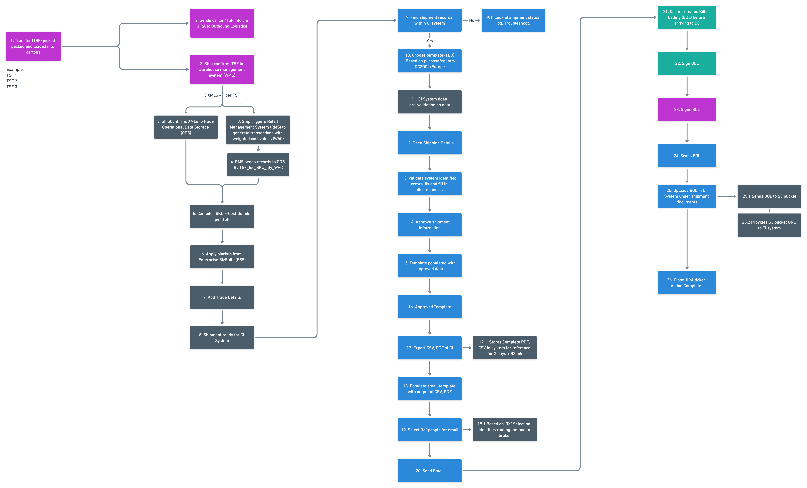
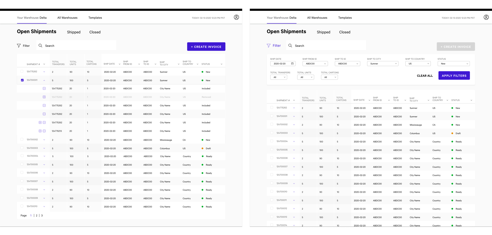

Commercial Invoice
A tool to create commercial invoices for employees so they can manage and track shipments leaving one warehouse to the another.
*Visuals in this page are altered due to project NDA.
Role:
User Research, User Interface, User Experience
Tools:
Sketch, Invision, Zeplin
Objective
The objective for this new tool is to allow for visibility into the shipment building process and quicken the creation and accuracy of commercial invoices, through automating and digitization of input. Currently this process is done manually into Microsoft Excel.
*As part of the project NDA, I can't go into details about the overall MVP of the project. Feel free to reach out to me to learn more about the process!
User Flow
Initial Sketches
This was done with the client to get a deeper understanding of the flow that should be prioritized.

Open Shipment Screens
The user is able to expand the table to get a more detailed view of the shipment number, which they can create an invoice and export it as a report. We also included a filter feature for easy searchability.
